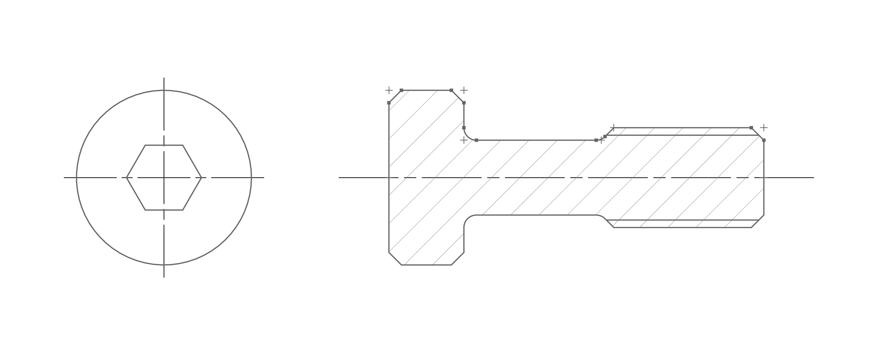

While developing Bolted Joint Studio, I realised my engineering drawing rendering code would be better suited as a separate library to avoid duplication. Redprint (a portmanteau of redline corrections on blueprints) introduces interactivity with the drawings, allowing direct editing and dragging. It also generalises the old section view hatching code from the iso fits calculator for any arbitray section. I'm currently defining its future scope, and adding functionality as needed.
